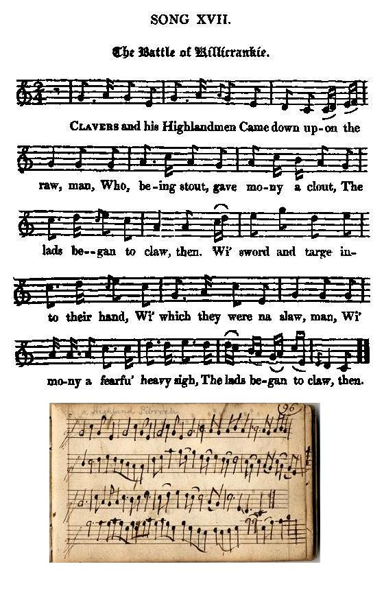

The Battle of Killiecrankie
La Bataille de Killiecrankie
17th June 1689 - 17 juin 1689
from David Herd's "Collection of Ancient and Modern Scottish Songs", Volume I, page 102, 1776, titled "Gilliecrankie"
Joseph Ritson's "Scotish Songs", titled "Cillicrankie", N°11, page 44, 1794
and Hogg's "Jacobite Relics", Volume I, N°17, page 61, 1819, titled "The Battle of Killicrankie"
Tune - Mélodie
"The Battle of Killiecrankie", modernized original sett
from Hogg's "Jacobite Relics", Volume I, N°17, page 61, 1819
and Henry Atkinson's Tunebook, pages 96 & 97, 1694
Sequenced by Christian Souchon

Original Sett - Usual Version (the present sound background)
and "Irish Gilekrankey" in Henry Atkinson's tunebook (1694).
|
Other "Killiecrankie" tunes
Upon the structure of the present lyrics, with the expletory syllable concluding every second line, alternating with a line with internal rhyme, are modelled the ensuing Killiecrankie songs, as well as Adam Skirving's Prestonpans song . |
Autres mélodies sur "Killiecrankie"
La stucture de ce chant, qui alterne un vers avec rime interne et un vers prolongé par un mot monosyllabique explétif, sert de modèle aux autres chants sur Killiecrankie, y compris le chant d'Adam Skirving sur Prestonpans . |

|
THE BATTLE OF KILLICRANKIE
1. Clavers [1] and his Highlandmen Came down up on the raw, man Who, being stout, gave many a clout, The lads began to claw, then. Wi' sword and targe into their hand, Wi' which they were na slaw, man, Wi'mony a fearfu' heavy sigh, The lads began to claw, then. 2. O'er bush, o'er bank, o'er ditch, o'er stank, She flang amang them a', man; The Butter-box got mony knocks, Their riggings paid for a', then. They got their paiks, wi' sudden straiks, Which to their grief they saw, man; Wi' clinkum clankum o'er their crowns, The lads began to fa', then. 3. Hur skipt about, hur leapt about, And flang amang them a', man; The English blades got broken heads, Their crowns were cleav'd in twa, then ; The durk and door made their last hour, And prov'd their final fa', man: They thought the devil had been there, That play'd them sic a paw, then. 4. The Solemn League and Covenant [2] Came whigging up the hills, man, Thought Highland trews durst not refuse For to subscribe their bills, then : In Willie 's name they thought nae ane Durst stop their course at a', man ; But hur nain sell, wi' mony a knock, Cried, " Furich, [3] Whigs awa, man." 5. Sir Evan Dhu, [4] and his men true, Came linking up the brink, man ; The Hogan Dutch [5] they feared such, They bred a horrid stink, then. The true Maclean [6], and his fierce men, Came in among them a', man; Nane durst withstand his heavy hand, A' fled and ran awa, then. 6. Oh on a ri! oh an a ri ! [7] Why should she lose King Shames, man, Oh rig in di ! oh rig in di! She shall break a' her banes, then ; With furichinish , and stay a while, And speak a word or twa, man, She's gie a straik out-o'er the neck, Before ye win awa, then. 7. O fie for shame, ye're three for ane! Hur nain sell's won the day, man; King Shames' red-coats should be hung up, Because they ran awa, then. Had bent their brows, like Highland trues, And made as lang a stay, man, They'd sav'd their king, that sacred thing, And Willie'd run away, then. Source: "The Jacobite Relics of Scotland, being the Songs, Airs and Legends of the Adherents to the House of Stuart" collected by James Hogg, published in Edinburgh by William Blackwood in 1819. |
LA BATAILLE DE KILLIECRANKIE
1. Clavers [1] descend avec ses gens Des Highlands disposés en ligne. Leurs sacs, leurs plaids ils ont quittés Pour être plus agiles. Leurs longues épées, leurs boucliers Se mirent en besogne: Avec des ahans effrayants, Voilà que tous ces diables d'hommes cognent. 2. Rives, buissons, fossés, étangs Sont franchis; la vague s'élance. Les embonpoints sous les coups de poings Paient pour toute l'engeance! D'estoc et de taille l'on ferraille. Gare à nos cimeterres Dont retentit le cliquetis! Et bientôt leurs soldats tombent à terre. 3. Quand, sans pitié, vite enjambés, Piétinés d'étrange manière, Tous ces Anglais, le crâne brisé En sanglants hémisphères, Reçoivent d'un "dirk" compatissant L'ultime coup de grâce, Ils sont certains que le Malin Lui-même leur fait cette triste farce. 4. Quand la Ligue et les Covenants [2] Ralliaient le peuple avec zèle, Sûr qu'ils pensaient que les gens aux braies Les prendraient pour modèles; Qu'au nom de Willie , personne ici, N'entraverait leur marche. Mais point du tout: ce sont des coups Avec des " Fuirich , [3] Whigs!" sur eux qu'on lâche! 5. Sir Evan Dhu [4]et ses héros Colmatent le flanc pour l'attaque. Les Hollandais [5] sont tant effrayés Que leurs culottes craquent, Tous ces braves lorsque les molosses De McLean [6] les rejoignent N'ont pas l'audace de faire face Et prendre le large leur semble idoine. 6. Ochoin a ri! Ochoin a ri! [7] L'Ecosse perdrait le roi Jacques? Och rig in di ! Och rig in di! Voulez-vous que tous ses os craquent? Juste un mot ou deux! Restez un peu! Fuirich! , soyez aimables. Laissez-la vous flatter le cou! Et c'est vous qui l'emporterez, que diable! 7. N'êtes-vous pas honteux, hélas! A trois contre un! Et qui l'emporte? Habits rouges des Stuarts et couards! Vous méritez la corde. L'usage le veut: baissez les yeux, Mais demeurez en place! Vous pourriez sauver votre roi: Willie pourrait alors demander grâce! (Trad. Christian Souchon(c)2009) |
|
[1]
Claver
:
John Graham of Claverhouse
.
[2] The Solemn League and Covenant was an agreement between the Scottish Covenanters and the leaders of the English Parliamentarians. It was agreed to in 1643, during the First English Civil War. After the Restoration the English Parliament passed the Sedition Act 1661, which declared that the Solemn League and Covenant was unlawful. [3] Fuirich (also verse 6): Gaelic for "Stay, stop!" [4] Sir Evan Dhu : Lochiel, 17th Chief of Clan Cameron. [5] Hogan Dutch or "Hogan-Mogan": see The Rebelious Crew [6] McLean : Baronet Sir John McLean. [7] Ochoin a ri! : Alas for the Chief! The same phrase is to be found in The Highland Widow's Lament |
[1]
Claver
:
John Graham de Claverhouse
.
[2] La Ligue et le Covenant était un pacte entre les Covenantaires écossais et les chefs des parlementaires anglais. Il avait été conclu en 1643, pendant la première guerre civile anglaise. Après la Restauration le Parlement anglais votale "Sedition Act" en 1661, qui déclara contraires à la loi la Ligue et le Covenant. [3] Fuirich (cf. aussi strophe 6): Gaélique pour "Arrêtez-vous, stop!" [4] Sir Evan Dhu : Lochiel, 17th Chef du Clan Cameron. [5] Hollandais en angl. "Hogan-Mogan": cf. La bande de rebelles. [6] McLean : Baronet Sir John McLean. [7] Ochoin a ri! : Hélas, O chef! La même expression se trouve dans Lamentation de la Veuve des Highlands |
|
|
|
|
Sir Ewen Cameron of Lochiel and the Clan Cameron at Killiecrankie
In 1689, after William of Orange had ousted King James II the Scottish Highland clans were to a great extent sympathetic to their former King. When John Graham of Claverhouse raised the Royal standard for King James II, most of the Highland Chiefs joined this "Jacobite" revolution, largely through the influence of Sir Ewen Cameron of Lochiel, XVIIth Chief of Clan Cameron who had been engaged in forming a confederation of clans loyal to James. When, therefore, Dundee came to Lochaber (*), Sir Ewen was able to give him an exact estimate of the support he was likely to receive. A force of about 1,800 men and a few horse had joined Dundee when he heard that General McKay , in command of the governmental troops, was advancing towards Inverness. Bonnie Dundee was determined to intercept McKay near Blair Atholl and, regardless of the disparity in numbers, bring him to battle. Many of the clans, including 500 additional Camerons, had not yet arrived. Dundee, however, requested Sir Ewen to follow with the small body of Camerons (240) he then had. With this "small band", they entered Atholl, where they were soon joined by about 300 Irish under the command of Major-General Cannon. Proceeding on their way, they arrived at Blair Castle on July 27th. Intelligence reports soon related that Mackay had just entered the Pass of Killiecrankie, heading towards the Atholl Basin. Strategically the pass was of great importance, as it controlled a crucial north-south route through the Highlands. Dundee, marched at the head of his troops to meet Mackay's army, which numbered about 3,500 foot and two troops of horse. These men were mostly Lowland Scots and veterans of the Dutch wars. Just left of the center, which consisted of the few horse Dundee commanded and forty of his "old troops," Sir Ewen took up his position at the head of the Camerons. Though there were great intervals between Dundee's battalions and a large void space left in the center, the line could not possibly be "stretched" so as to equal that of the enemy. Wanting men to fill up the void in the center, Sir Ewen was not only obliged to fight Mackay's own regiment, which stood directly opposite to him, but also had his flank exposed to the fire of Leven's battalion. Further diminishing his Cameron forces of only 240 men was that 60 were sent as Dundee's advance guard. By the time Dundee got his army in order it was well on in the afternoon. They were held back until near sunset. At seven o'clock Dundee gave the order to advance, upon which the Highlanders dropped their plaids and haversacks and advanced. Sir Ewen, after ordering his men to follow Dundee's command, seems to have been much encumbered by the use of "the only pair of shoes in his clan."He sat down by the way and deliberately pulled off the footwear that crippled him. "It is incredible with what intrepidity the Highlanders endured the enemy's fire; and though it grew more terrible on their nearer approach, yet they, with a wonderful resolution, kept up their own, as they were commanded, till they came up to their very bosoms, and then pouring it in upon them all at once, like one great clasp of thunder, they threw away their guns and fell in pell-mell among the thickest of them with their broadswords. After this the noise seemed hushed; and the fire ceasing on both sides, nothing was heard for some few moments but the sullen and hollow clashes of broadswords, with the dismal groans and cries of dying and wounded men." The men of Lochaber's charge made it through to the enemy line, where Mackay's foot were "swept away by the furious onset of the Camerons." Of the 240 reported Cameron men who took the field at Killiecrankie, one half perished in the battle, mainly from the flanking fire by Levin's battalion. The present contemporary song relates: "Sir Evan Dhu, and his men true, Came linking up the brink, man: The Hogan Dutch they feared such, They bred a horrid stink, then." Unfortunately, Dundee fell at the close of the battle, mortally wounded by a shot about two handbreadths within his armor, on the lower part of his left side. The Highlanders, though they had to mourn the loss of about one third of their army, secured a complete victory. Few of the enemy escaped, but having lost their brilliant commander, the war may be said to have ended - before it was well commenced - by a Highland victory; perhaps the most brilliant on record. (*) Lochaber is the area around Fort William and Ben Nevis and the homeland of Clan Ranald of that ilk, Clan McDonald of Keppoch and Clan Cameron. Source: Clan Cameron Archives |
Sir Ewen Cameron de Lochiel et le Clan Cameron à Killiecrankie.
En 1689, après que Guillaume d'Orange eut évincé le roi Jacques II, les clans des Hautes Terres d'Ecosse demeurèrent majoritairement fidèles à leur ancien souverain. Si, lorsque John Graham of Claverhouse leva l'étendard royal pour le roi Jacques, la plupart des chefs de clans se rallièrent à la rébellion "Jacobite", on le doit surtout à Sir Ewen Cameron of Lochiel, 17ème Chef du Clan Cameron qui s'était employé à constituer une confédération de clans partisans des Stuarts. Aussi quand Dundee se présenta à Lochaber (*), Sir Ewen put lui indiquer avec précision l'importance des effectifs susceptibles de rallier sa cause. Une armée d'environ 1.800 fantassins et quelques cavaliers avait rejoint Dundee quand il apprit que le Général McKay , à la tête d'une armée royale, marchait sur Inverness. Il décida de l'arrêter près de Blair Atholl et de lui livrer bataille malgré son infériorité numérique. Plusieurs clans, dont un renfort de 500 hommes du clan Cameron, n'étaient pas encore arrivés. Dundee demanda à Sir Ewen de le suivre avec le petit groupe (240) de Cameron dont il disposait. Ils entrèrent donc en Atholl, bientôt rejoints par 300 Irlandais environ, sous les ordres du général Cannon, et parvinrent à Blair Castle le 27 juillet 1689. C'est là qu'ils apprirent que McKay venait de s'engager dans le défilé de Killiecrankie, sur la route du bassin d'Atholl. Ce col avait une grande importance stratégique sur l'itinéraire nord-sud traversant les Highlands. Dundee marchait à la tête de ses troupes à la rencontre de l'armée de McKay qui comptait 3.500 fantassins et deux escadrons de cavalerie. Il s'agissait pour l'essentiel d'Ecossais des Lowlands et de vétérans des campagnes de Flandres. Juste à la gauche du centre occupé par la cavalerie commandée par Dundee et par ses "vieilles troupes", Sir Ewen se plaça à la tête des Camerons. Bien qu'il y eût de grands intervalles entre les bataillons de Dundee et un large vide au centre du dispositif le front ne pouvait être étiré pour ête couvrir lel front adverse. Manquant d'hommes pour combler le vide au centre, Sir Ewen dut combattre le régiment commandé personnellement par McKay, placé juste en face de lui, alors que son flanc essuyait le feu du bataillon de Leven. Sa petite compagnie de 240 hommes seulement, se vit amputée de 60 éléments qui vinrent constituer l'avant-garde de Dundee. Le temps que ce dispositif se mette en place, l'après-midi était très avancée, mais l'on attendit encore qu'il fasse presque nuit. A sept heures, Dundee ordonna de faire mouvement et les Highlanders déposèrent leurs plaids et leurs havresacs, puis s'avancèrent. Sir Ewen commanda à ses hommes de suivre Dundee. Il semble qu'il ait été très gêné par l'usage de "la seule paire de chaussures de son clan". Il s'assit sur le bord du chemin et se débarrassa de cet encombrant équipement. "C'est avec une folle intrépidité que les Highlanders endurèrent le feu ennemi, toujours plus dévastateur au fur et à mesure qu'ils progressaient. Obéissant aux ordres reçus, ils s'abstinrent pourtant stoïquement de riposter, jusqu'à ce qu'ils soient au contact de l'adversaire. Alors ils firent feu tous ensemble, un véritable coup de tonnerre. Après quoi, ils jetant au loin leurs fusils, ils se ruèrent pêle-mêle sur le gros des troupes adverses avec leurs larges épées (broadswords). Ensuite, pendant quelque temps, ce fut presque le silence- on avait cessé de tirer des deux côtés - , si ce n'est, obstiné et sourd, le martellement des lames, les gémissements horribles des blessés et les râles des mourants". La charge des hommes de Lochaber avait percé la ligne ennemie où l'infanterie de McKay fut "balayée par l'avance furieuse du clan Cameron". Surles 240 Cameron recensés qui combattirent à Killiecrankie, la moitié périt dans la bataille, surtout sous les balles du bataillon de Leven qui l'attaquait sur son flanc. C'est bien ce que dit notre chant: "Sir Even Dhu et ses héros Colmatent le flanc pour l'attaque. Les Hollandais sont tant effrayés Que leurs culottes craquent..." Malheureusement, vers la fin de la bataille, Dundee fut mortellement blessé au bas ventre par une balle qui avait pénétré profondément en dessous de son armure. Les Highlanders, tout en déplorant la perte d'environ un tiers de leur armée avait remporté une victoire complète. Rares furent dans les rangs ennemis ceux qui en réchappèrent. Mais la perte de leur brillant commandant marquait par cette éclatante victoire Jacobite, peut-être la plus brillante de toutes les annales, la fin de la guerre, avant qu'elle n'ait vraiment commencé. (*) Lochaber est la région qui entoure Fort William et le Ben Nevis et le pays d'origine des Clans ClanRanald de Lochaber, McDonald de Keppoch et Cameron. Source: Clan Cameron Archives |
|
|
|